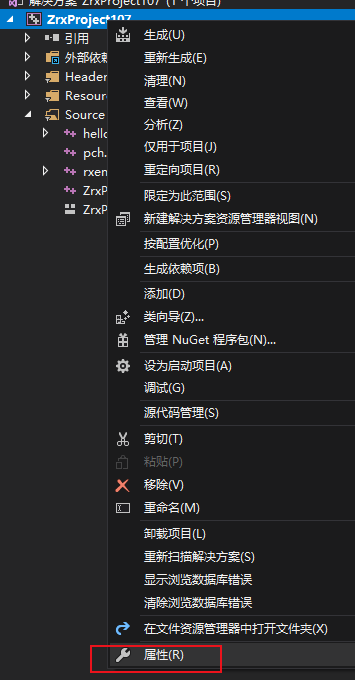
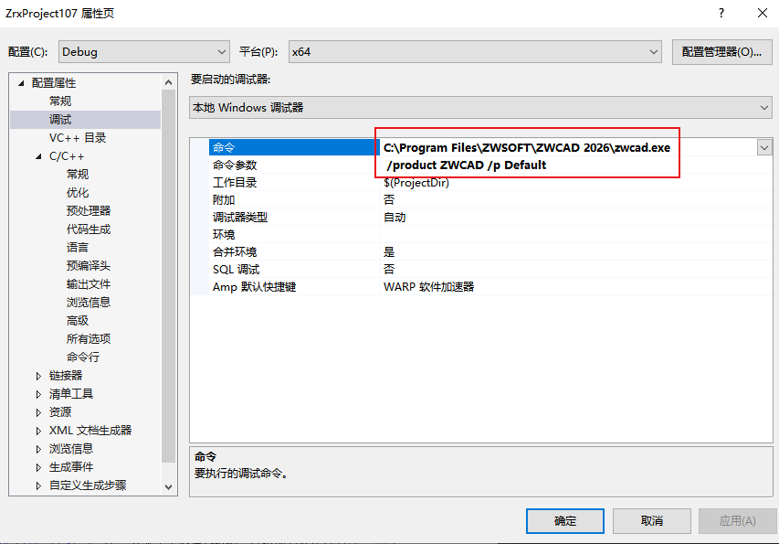
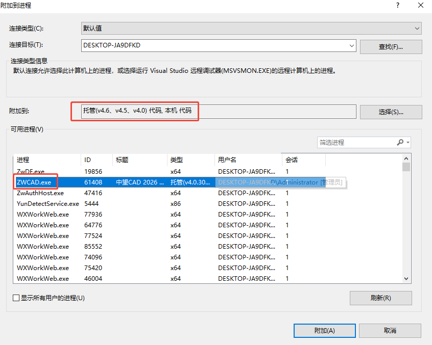

加载ZRX文件
在成功生成中望CAD ZRX二次开发程序的程序集文件后，需要加载才能使用其中定义的功能，以下分别介绍几种加载方式
手动加载
启动中望CAD后，执行ZRX命令或者APPLOAD，选择需要加载的ZRX文件即可加载。
自动加载
要实现自动加载，需要写一些信息到注册表，假设你自动加载的文件为“c:\sample.dll”，中望CAD的版本是2026中文版，那么就往注册表的以下位置写入如下的信息：
[HKEY_LOCAL_MACHINE\Software\ZWSOFT\ZWCADM\2026\zh-CN\Applications\Sample]
"LOADCTRLS"=dword:00000002
"LOADER"="c:\\sample.zrx"
"DESCRIPTION"=""
其中LOADER项指定了zrx文件的路径，如果此处只写了文件名（比如只写sample.zrx），则中望CAD会在支持文件搜索路径中查找该文件是否存在。
在代码中加载其它zrx文件
在程序运行时，有时我们希望在通过代码加载其它的zrx文件，有以下两种方法可以实现：注意这里文件没有加路径，需要在搜索路径添加zrx所在路径。
1. ZcRxDynamicLinker::loadModule
ZcRxDynamicLinker *pLinker = zcrxDynamicLinker;
if (!::zcrxAppIsLoaded(_T("sample.zrx")))
{
if (!pLinker->loadModule(_T("sample.zrx"), false, true))
return ZcRx::kRetError;
}
2. zcedZrxLoad
int iRet = zcedZrxLoad(_T("sample.zrx"));
调试中望CAD ZRX二次开发程序
在开发过程中经常需要调试程序，接下来将以Visual Studio为例介绍如何进行调试。
以“启动”的方式进行调试的操作步骤
1. 在菜单中选择[项目]―>['工程名称' 属性]

切换到[调试]页面，在[命令]选项中选择指定ZWCAD.exe的完整路径。[命令参数]选项中设置 /product ZWCAD /p Default表示启动ZWCAD平台版本的默认配置。如果是使用开发向导创建的项目则此项会默认设置好。

2. 在菜单中选择[调试]―>[开始调试]，则Visual Studio会启动中望CAD并进入调试状态。
注意：由于在调试状态下中望CAD启动会比较慢，是由于启动调试的时候加载了ZWLisp的一些调试信息，如果程序不执行LISP开发文件，可以暂时将安装包根目录下的ZwLisp.zrx重命名或者移除可以改善启动调试慢的问题。
以“附加到进程”的方式进行调试的操作步骤
1. 手动启动中望CAD
2. 在菜单中选择[调试]―>[附加到进程]
在进程列表中选择ZWCAD.exe。请注意调试的模式要选择“托管(v4.6、v4.5、v4.0) 代码，本机 代码”。

3. 点击“确定”按钮后Visual Studio就会把调试器附着到ZWCAD.exe并进入调试状态。